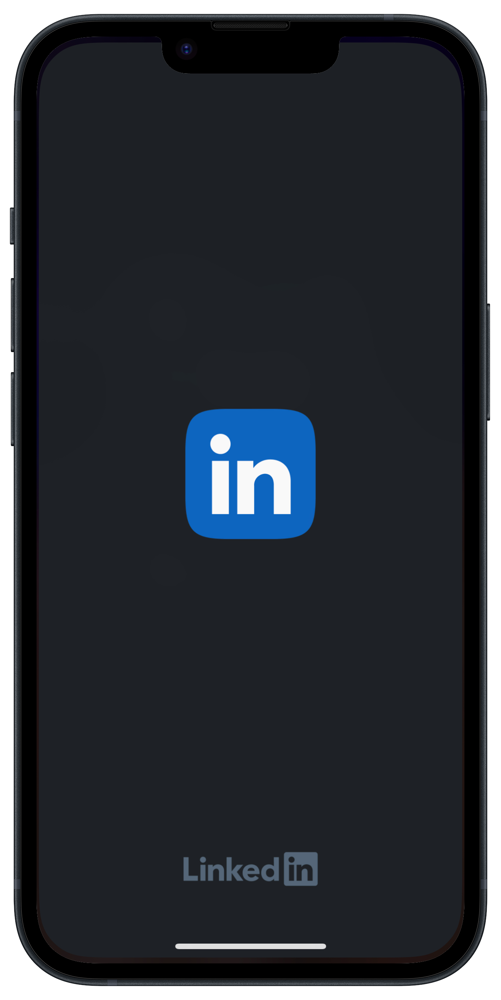

Welcome to the journey of a lifetime! In this guide, I will show
you some FREE resources I have found that I think would be helpful
for those just beginning to explore the tech space. Prepare to
discover your passion and turn it into a thriving tech career!
Step 1: Research
Explore diverse tech roles to pinpoint your interests and align
your skills with the right path. Use roadmap.sh for insightful
overviews and roadmaps for roles like UX/UI designers, technical
writers, DevOps engineers, and software developers.
🔭 Explore Roles: Dive into various tech roles to understand their
unique challenges and opportunities.
🗺️ Use roadmap.sh: Leverage roadmap.sh for comprehensive insights
and skill development roadmaps.
🎯 Narrow Down Interests: Identify roles that align with your
aspirations and skills.

Step 2: Network
Having narrowed down your desired tech role, it's time to build
connections that can shape your path. Follow these steps to
effectively network and gain valuable insights:
🚀 Leverage LinkedIn for Tech Success! 🌐
Utilize LinkedIn as a powerful platform to connect with
professionals in your chosen field. Search for individuals
holding the role you aspire to and send personalized connection
requests.
🤝 Expand Your Network
As you engage with professionals, expand your network by
connecting with others in similar roles or related industries.
Building a diverse network will expose you to various
perspectives and opportunities within the tech sector.
☕ Request Coffee Chats - Brew Success!
Initiate conversations by requesting virtual or in-person coffee
chats. Politely ask if they'd be willing to share insights about
their role, daily responsibilities, and experiences at their
current company. Many professionals are open to helping aspiring
individuals in the tech field.
🎓 Learn from Their Experiences
During the coffee chats, absorb information about their journey
into the tech industry. Inquire about the skills they found most
valuable, challenges faced, and any advice they have for someone
making a career switch.
💡 Tap into Valuable Advice
People within the tech community often provide valuable advice
to those looking to transition. Use this opportunity to gather
insights that will guide your next steps, helping you navigate
the tech landscape more effectively.
Step 3: Learning!!
Embarking on a career transition demands a solid foundation in tech skills. Delve into the curated list of free resources meticulously compiled to empower you with the essential knowledge for success. These resources, thoughtfully organized on Google Sheets, cater to various learning preferences and are categorized into two distinct tracks:
🎓 Self-Paced Learning 🎓
Explore the flexibility of self-paced learning, allowing you to tailor your educational journey according to your schedule and learning style. These resources enable you to progress at your own pace, gaining in-depth insights into the intricacies of diverse tech domains.
🤝 Cohort-Based Learning 🤝
Immerse yourself in a collaborative learning experience through cohort-based learning. Join a community of like-minded individuals, engage in structured learning sessions, and benefit from shared insights. Cohort-based learning provides a dynamic environment that fosters collaboration, discussion, and collective growth.
I want you to act as an expert tech industry resume writer
and reword this job duty in a way that shows my transferrable skills.
“Handling and resolving customer complaints regarding product sales to
customer service problems”
Certainly! Here's a revised
version that emphasizes your transferrable tech skills: "Managed and
resolved customer inquiries spanning product sales and customer service,
leveraging technical expertise to address issues seamlessly from initial
contact through resolution. Demonstrated proficiency in troubleshooting
and effectively communicating solutions, contributing to enhanced
customer satisfaction and retention.
Step 4: Optimize your resume
You may be thinking that none of your past roles or your current roles
are relevant to the new tech role you want but that’s not the case! You
have MANY transferrable skills that are valuable to you succeeding in
your new tech role.
My favorite tool to use is ChatGPT to help me figure out ways to rewrite
job duties! You will have to play around with your wording when asking
ChatGPT to rewrite your transferable skills but my favorite way to start
a prompt is by telling it to act as an expert in the subject area I am
trying to fix, for example: ➡️
This is of course a little too long of a job duty, you always want to
aim for one sentence per job duty but it’s a great baseline to nitpick
the verbiage you’d like to use in your new resume template! You also want to add KEY VALUE METRICS, numbers make people happy and if you can show you increased productivity by 20%+ your interviewee will like that.
Don’t downsize any previous job you’ve had, they are all valuable life
experiences that form your professional self to this day and have helped
you reach to the point you are now! REMEMBER THAT!
Step 5: Optimize your Linkedin!
Your LinkedIn is one of the most important things employers see
alongside your resume, especially in the tech industry. It’s also
necessary because you will be using LinkedIn to network with people as I
mentioned in Step 2.
Here’s a checklist of things you should be doing to optimize your
LinkedIn:
📷 Get a professional headshot and use this on LinkedIn.
🤝🏽 Create an authentic banner that includes your name and portfolio, be
creative with it don’t pick a stock photo on Canva and call it a day.
🗣️ Create a capturing headline
Avoid using the words aspiring or
looking for a tech role. Think of your headline as a short sweet
elevator pitch. What do you bring to the table? I transform ideas into
code OR I help companies automate their workflow. You could also ask
ChatGPT for help with this with a similar prompt from the resume
writing: I want you to act as an expert LinkedIn career coach, and
help me write a good eye captivating headline, I am just starting out
in tech and I am learning technologies to be _XYZ_.
✍🏽 Write your summary and tell your reader why your switching to teach,
what motivates you, and what you hope to accomplish if and when you
land such a position!
💻 Document your journey!
Write a post a day on LinkedIn and youse
hashtags so you can get your posts noticed and interact with other
people’s posts. As a developer I’ve personally done #100daysOfCode,
which involves me dedicating an hour a day to coding and writing on
LinkedIn what I learned each day. That got me noticed by quite a few
people and helped me network with others. Remember when I said
companies also look at your LinkedIn? Yeah well if you're documenting
your journey you're showing evidence that you are dedicated to
learning and becoming better at the role you are going after!
Thank you so much for reading this guide.
I created it because lately, I’ve had many
people reach out to me for advice on resources and what they should do since they
are starting out. I figured it would be better to have a guide that I could give each
person full of many resources and tips and tricks to help. It would be great to
connect with each and every one of you so add me on LinkedIn and provide any
feedback you’d like about this guide!
.png)